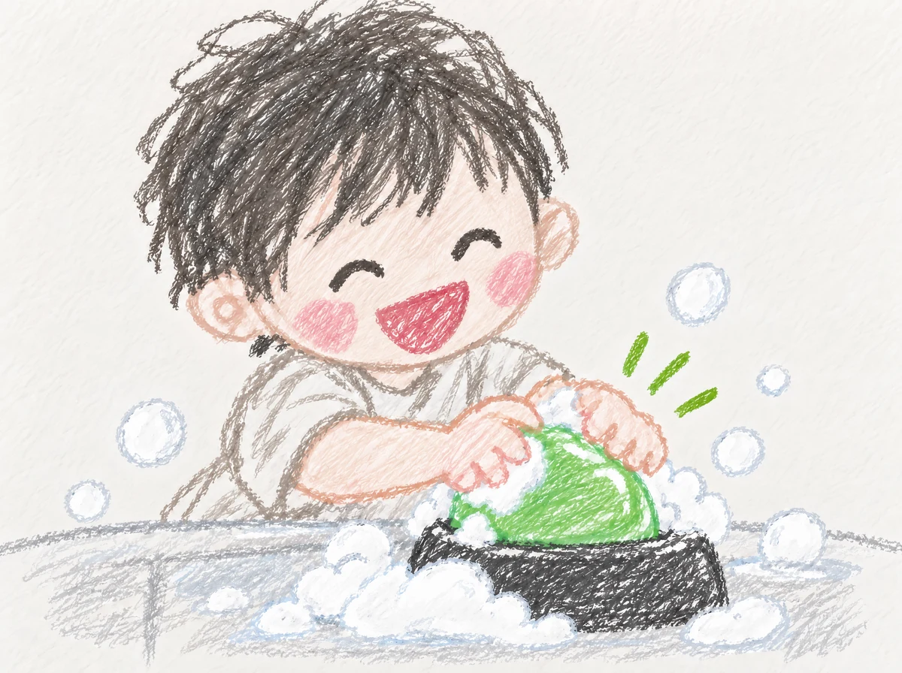
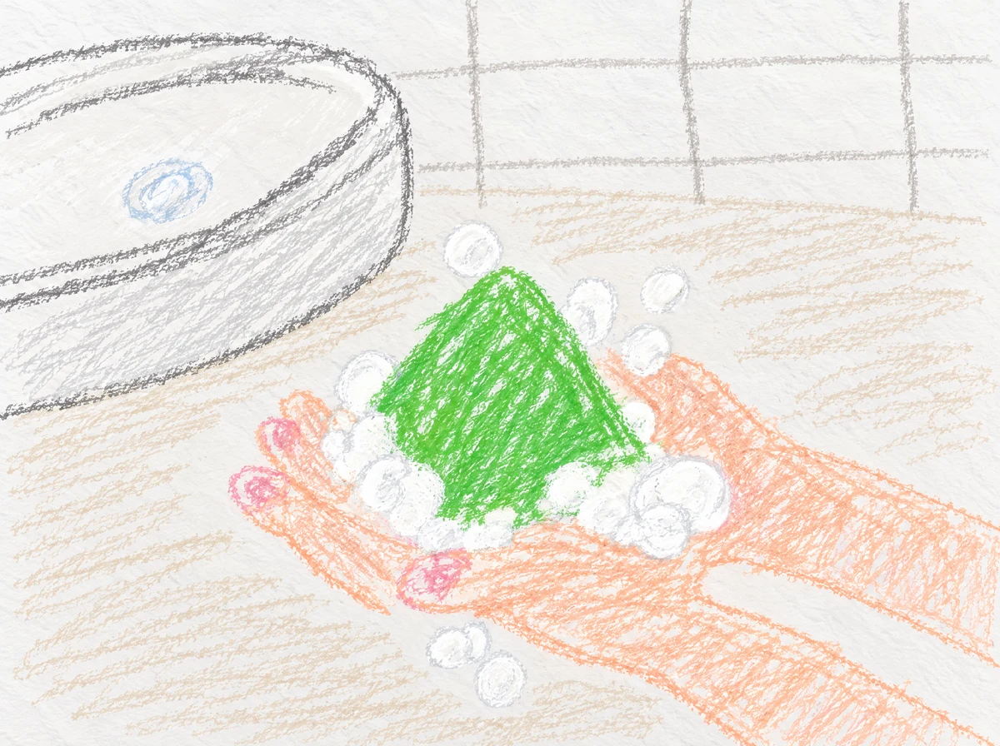

말랑말랑 비누,
우리 집에서
함께 기록해볼까요?
매일 돌아오는 ‘손 씻어!’ 실랑이 대신, 말랑말랑 젤리 비누를 놓아주세요.
아이가 먼저 세면대로 향하는지, 일주일간 직접 사용해보실 20가구를 찾습니다.
20가구 선정 · 본품 무료 제공 · 배송비 참여자 부담


눌러도 다시 오름,
습관을 만드는 감각.
제주 오름의 완만한 능선을 닮은 반투명 젤리 제형입니다.
손가락으로 꾹 누르면 느껴지는 말랑말랑한 탄성이 손씻는 시간을 놀이처럼 느끼게 해요.
찬물에도 부드럽게 풀리는 조밀한 거품이 아이 손 구석구석을 순하게 닦아줍니다.
단순히 씻는 행위를 넘어, 손끝으로 느끼는 즐거운 감각을 선물합니다.

손끝으로 누르면 차오르는 탄성. 세면대로 향하는 발걸음이 놀이처럼 가벼워져요.

아이 손 위에서 피어나는 크림 거품. 실랑이 없이 30초가 금세 지나갑니다.

제주 자연을 모티브로 빚은 정갈한 비누. 욕실 어디에 두어도 단정하게 어울립니다.
제주의 자연과 연구소,
아이의 손끝에서 만납니다.
녹차밭과 오름, 제주 자연에서 시작된 손씻기 이야기.
비누가 머무는 자리와 시간
세면대 위에서 피어나는 작은 변화의 순간들.

자연과 촉감을 연구하는 제주의 공간

아이가 스스로 다가서는 정갈한 세면 공간

친환경 단상자와 숲을 닮은 에메랄드 비누

세면대 앞에서 아이와 눈을 맞추는 다정한 시간

식물 유래 원료를 담은 보드라운 감촉
체험 여정 안내
- 01
신청서 남기기
10월 3일(금)까지 아래 신청서를 남겨주세요.
- 02
선정 및 안내
선정된 스무 분께 10월 4일 개별 연락드려요.
- 03
집에서 사용하기
10월 12~14일 발송. 일주일간 편하게 사용해 보세요.
- 04
사용 후기 공유
일주일 사용 후 간단한 모바일 설문에 응답해 주세요.
오르소프 말랑비누
체험단 신청
우리 집 세면대의 기분 좋은 변화,
아래 양식을 작성하여 신청해 주세요.
- 말랑비누 본품 70g + 30초 습관 가이드 증정
- 선정 20가구 제품 무료 제공 (배송비 3,000원 참여자 부담)
- 일주일 사용 후 약 5분 모바일 설문 작성
자주 묻는 질문
선정 발표는 언제인가요?
신청자 중 20가구를 선정하여 10월 4일까지 개별 연락드립니다.
비누 성분은 아이에게 순한가요?
제주 식물 유래 원료를 담아 아이 피부에도 순하고 부드럽습니다.
설문 조사는 어떻게 참여하나요?
일주일간 사용 후 문자로 안내드리는 모바일 링크(약 5분)로 참여합니다.
사용 전 주의사항이 있나요?
젤리 제형이므로 아이가 먹지 않도록 주의해주세요. 상세 보관법은 동봉된 안내서에 담겨 있습니다.
습관을 만드는 감각, 오르소프
매일 세면대에서 마주하는 작은 일상이 지루한 훈육이 아닌,
손끝으로 만지고 느끼는 다정한 기억이 되기를 바라는 마음에서 시작되었습니다.
규칙 대신 즐거운 감각
억지로 씻게 하는 대신, 누르면 차오르는 탄성과 조밀한 거품으로 손씻기를 즐거운 놀이로 바꿉니다.
자연을 닮은 정갈함
제주 오름의 곡선과 식물 유래 원료를 담아, 욕실 세면대 어디에 두어도 편안하게 스며듭니다.
세면대 앞 30초의 변화
아이 손끝에서 시작된 작은 촉감이 매일의 바른 습관으로 이어져 온 가족의 시간을 다정하게 채웁니다.
‘눌러도 다시 오름.’ 오르소프가 전하는 손끝의 감각입니다.